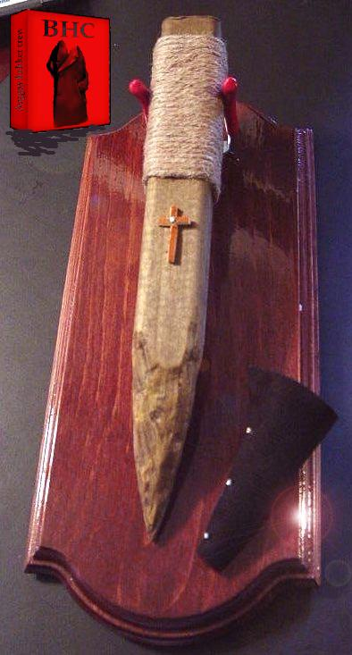

<html>
<head>
<title>BHC#27</title>
</head>
<body background="../../engine/picts/background_for_text.jpg" style="background-attachment: fixed"  bgproperties="fixed"
alink="#ffffff" bgcolor="#000000" link="#ffff00" text="#ff0000" vlink="#ffffff">
<pre><font face="Lucida Console">

 ╪ р

 $.' ",#(7),01444'9=82<.342 █

%&'()*456789:CDEFGHIJSTUVWXYZcdefghijstuvwxyzГДЕЖЗИЙКТУФХЦЧШЩЪвгдежзийк▓│┤╡
 ─
$4с%ё&'()*56789:CDEFGHIJSTUVWXYZcdefghijstuvwxyzВГДЕЖЗИЙКТУФХЦЧШЩЪвгдежзийк▓│┤╡╢╖╕╣║┬├─┼╞╟╚╔╩
Q@щE1Ж
eТ
┼И═(Н▒/N╒HЗC╔зщv┐i╜М└∙╧√вл╬■dюGLэ╡┤ьYщ╖'л-░ч∙╒бJWQёГ╚▌Ьv└н`┼ш∙Яа╠╪╬╦йдАЄI╔·╫DI╢╥ч╕╧╧!╪Ф

 <center>
 
 </center>

           18:20:29: я название токо что придумал!
           18:20:33: ПРЯМОЛИНЕЙНЫЙ релизенг
           18:20:46: т.е. линейный потому что 1 фаел и всё
           18:20:58: линейный как адресное пространство (следите за gpf)

 <center>
 
 </center>

ГИПЕРТРОФИРОВАННЫЙ релизенг

<h1>В НОВЫЙ ГОД В МЕСТЕ С БХЦ!</h1>

эпиграф:

-Любишь ты скамерсантов? - спросил он.
-Ой, ненавижу!
-И я тоже... Когда они живые. Но я говорю про дохлых - писать на них
прафаел в релизенг

 <center>
 
 </center>


интро (поместить до ночала релизенга):

 <center>
 
 </center>


КОФАУНДЕР (поёт в стиле рок-оперы):

ВЕСЬ МИР - РЕЛИЗЕНГ, А ЛЮДИ В НЁМ - ФЕДБЕК
И КАЖДЫЙ ДЕНЬ Я СОВЕРШАЮ ОТ И ДО ПРОБЕГ -
ОТ СПЛОЕТА И ДО ШЕЛКОДА
И МНЕ ПО НРАВУ ЭТА МОДА

СКАЖИТЕ, БАГЕРС, ВЫ - ЛЮБИТЕЛЬ ИСПОЛНЯЕМОГО КОДА?


ФАУНДЕР:

ПОБОЙТЕСЬ БОГА, И СВОЕЙ РУКОЙ
ПЕРЕКРЕСТИТЕСЬ
Я ВОВСЕ НЕ ТАКОЙ
ПОКА ВЫ КОМПЕЛИРУЕТЕ СОКС
Я ПРЕДПОЧТУ КРАСАВЧЕГОВ И КОКС
И ЗНАЮ ВОТ ЧТО, ДРУГ:
ЛЮБИТЕЛИ ШЕЛКОДА В РУК
НЕ БРАЛИ ВЕНИК
ЖИВУТ В ГРЯЗИ, ПРЫЩАХ, БЕССЛАВНО И БЕЗ ДЕНЕГ
ПОКРЫТЫ ГНИЛЬЮ И В ДУШЕ ИХ СКАМ
ЗАЧЕМ ВСЁ ЭТО МНЕ?
ТОГО НЕ ЗНАЮ САМ

ХАКЕРС: ТОГДА СКОРЕЕ ЖЕ НОЛЬ ДЕЙ К СЕБЕ ПРИБЛИЗИМ

БАГЕРС И ХАКЕРС, ХОРОМ, ПОЮТ:

И В МЕСТЕ СКОМПЕЛИРУЕМ РЕЛИЗЕНГ!

хор одептов:

А ТАКЖЕ ЗАПОСТИРУЕМ ОНОНС
НА СЛАВНЫЙ САЙТ ВОЛОДИ

 <center>
 
 </center>

ВЛАСТИТЕЛЯ СКАМБАНКИНГОВ И БОНЗ,
ЛЮБИТЕЛЕЙ ОСЕМБЛЕРА, НАВРОДЕ

ЭМСИ, ЧТО ВОЛОДИЮ СЛУЖИЛ
НЕ ВЫНЕС СКАМА, СУЕТЫ И СКУКИ
ОТКОМПЕЛИЛ ЗА ЧАС ШЕСТНАДЦАТЬ КУКИ
И РУКИ НА СЕБЯ ЖЕ НАЛОЖИЛ

ДА ТОЛЬКО ВЫШЛА ТАМ ПРОМАШКА
ТАК ЛИХО КАРДИЛ ОН
ЧТО СПИЗДИЛ МИЛЛИОН
И НЫНЕ ВЕРНЫЙ ВЕЛЕЗ (ОН ЖЕ МАШКА)
СТОИТ И СЫПЕТ СОЛЬЮ НА ЛИМОН

К ТЕКИЛЕ
И ВЕРНО ПРИБЛИЖАЕТСЯ К МОГИЛЕ

ВОТ ТАК ПРОХОДЯТ ДНИ И ГОДЫ
ЛЮБИТЕЛЕЙ АСЕМБЛЕРНОГО КОДА
И ВСЕЙ ПОГАНОЙ ИХ ПОРОДЫ
О КОЕЙ ПИШЕТ ПРАВДУ НАША КРЮ

И ВСЕХ МЫ ВАС ВЕРТЕЛИ НА ХУЮ!

Неизвестный Одепт, стучится в осикью:

О БОЖЕ МОЙ, Я ВЕСЬ ГОРЮ
КАК СКОРО ЗАРЕЛИЗЕТЬ ВЫ МОГЛИ БЫ?

ФАУНДЕР: СКОРЕЙ ЛИНКУЙТЕ ЛИБЫ!

КО-ФАУНДЕР: РЕЛИЗЕНГ ЖДУТ ТАЛИБЫ!

МЫ В МЕСТЕ СКОМПЕЛИМ
НЕМНОГО ЭТОЙ ПРАВДЫ
И ВСЕХ МЫ УДИВИМ
ХОТЬ МЫ ЕЩЁ НЕ БАРДЫ

 <center>
 
 </center>


начало релизенга, небритый скамерсант с красным лицом,
в костюме и галстуке, покачиваясь выходит на подиум, и громко произносит:

 <center>
 
 </center>


- НАМ НЕ ДАДУТ ОСВОБОЖДЕНИЯ НИ ЦАРЬ НИ БОГ НИ БХЦ,
ДОБЪЕМСЯ МЫ ОТКОМПЕЛЕНЬЯ СВОЕЙ РУКОЙ НА ДИСКЕ ЦЕ!


- пишите,  пишите,  все  равно у вас ни фига не выйдет. загрузка специального
дистра Linux с USB, запуск виртуальной машины с полноценным Linux с того же
USB,  шифрованный  туннель  OpenVPN до сервера на EC2 с случайным IP каждый
раз,  оттуда  -  до  Tor-а  или  куда  еще  -  и  пусть  бундесвер  сосет и
причмокивает


Мне про него еще *** рассказывал, который сейчас правда с ним же
в одной дурке и содержится


статья: красота кода


не замудь чмоднуть))) +x
попробуй суидники поискать ; конфиги , логи и т. п. пропарси


всё что осталось после меня - сплоет.txt


Нож  Правды  и  Истины  втыкается  в  бледную  хэкерную плоть, и видно, как
сочатся   первые   капли   зараженной  крови:   володий,  эмсирем,  акуила.
Взрезая   пласты  хэкерных   инсинуаций  мы   движемся справа налево, чтобы
затем  развернуться  на  90   градусов   (чистый   спирт!)   и   скользнуть
вниз,  вспарывая  и  разрывая  хэкерные   связи   от   и   до.   Дойдя   до
точки  невозвращения    лезвие   Правды  разворачивается    вправо и вверх,
коротким  быстрым    полукругом     вырезая   шмат   гнилого     одептского
мяса.     Из показавшейся     дыры,    из   этой   клоаки  форумно-асечного
трейдящего   сплоеты   андеграунда   появляются  первые  одепты  -  и   луч
Божественного    Света  освещает    их    испуганные    лица, на своём пути
выявляя  и выжигая до тла жидохэкерно-скамерсантскую   неправедную  падаль,
даря Надежду, Понимание и Свет больным и измождённым, уставшим, отчаявшимся
и    измудоханным   компелированием.   В    этот    момент    длань  Истины
приподнимается   и  неумолимо  падает  снова,  втыкая  лезвие   Правды  так
глубоко,   как   только   возможно,   доставая  до  самых  основ  (а  стало
быть   и фундаментов)   -  чтобы сильным уверенным движением вспороть самую
суть   -  влево    и   вниз, для верности, приподняв, воткнуть   ещё   один
релизенг      -      и    провести     линию     ко-фаундера,  пересекающую
предыдущую,   вниз  и  вправо.  Божий  крест,   начертанный на челе прыщаво
жлобствующих,    оскорбленных    детством      и    униженных      кампегом
хуесосов.    Праведный    гнев    обрушивается   на скамерсантские   головы
снова   и   снова,   и   ещё   много лет подряд вырезая финальное Ц: Б.Х.Ц.
Черта, разделившая андеграунд.


        /*
         * add back carry outs from top 16 bits to low 16 bits
         */
        sum = (sum >> 16) + (sum & 0xffff);     /* add hi 16 to low 16 */
        sum += (sum >> 16);                     /* add carry */
        answer = ~sum;                          /* truncate to 16 bits */
        return (answer);


1й вопрос в федбек:
Q: почему вы мешаете нам гнить?
A: RIGHT CLICK ON THEM  AND IT SHOULD TELL YOU

гниющие над клавиатурой


20:39:49 : бля надо будет и нам такое сделать!
20:39:52 : логи чатов
20:40:00 : и там надо по чату опознать скамерсанта!


в начало тоже:

Вы читаете эту Божественную книгу, но у всех ли она есть? У кого есть
БХЦ,  -  читайте  чаще,  давайте  читать  и другим, не жалейте. У кого нет,
попроси  у  другого;  и  первые,  какие будут у тебя деньги, употреби не на
мулаток, не на кокс, а купи себе святое БХЦ.


Q: участились случаи хэкерных венерических заболеваний.
что об этом думают в БХЦ?
Барбело и Колорбас

A: ебя простетуток, постарайтесь не сломать диван


Ясен пень ! Только виндузятников можно иметь в любой момент в любой позе !!!


3:12:15 : скамерсант пропил все деньги и стал нищ и гол
3:12:29 : и вернулся к своим бывшим товарищам-одептам с повинной
3:12:35 : давайте мол дружить опять
3:12:41 : перестал ли он быть скамерсантом?

ОКОЛОСМЕРТНЫЙ РЕЛИЗЕНГ

17:10:56 mr.buggers: хэккер, помни: гипертекстовая ссылка - твой путь к знаниям.

<h2 align=center><a href="http://bhcrew.org/">гипертекстовая ссылка</a> - твой путь к знаниям</h2>

был некто а стал тем кто !

17:11:00 mr.buggers: Клоундада Андеграунда
Профсоюз БХЦ

 <center>
 
 </center>

2:21:28: БХЦ НЕ КРАСНЕЕТ ТВАРЬ!
2:21:36: зри в корень

 <center>
 
 </center>

17:11:10 mr.buggers: I love learning new technology and
techniques, and I want to give back to the amazing community of hackers


дорова БАХАЦЕ, дайте мне сылку с примерами статей которые вам
присылают,а то я не панял какого садержания вам нада прислать
статью,заранее спасиба!
с уважением, студент Штукатуров


Вера В БХЦ или Есть ли Жизнь После.

Задумывались  ли вы когданибудь что будет после БХц ? Есть ли жизнь после ?
Ведь  если релизенгам предшедстовали 15 лет тени, то не исключено и другое.
Но  не  нужно  знать  есть  бхц  или  нет,  релизит ли оно релизенги или не
релизит.  Нужно  просто  верить.  Вера, это единственное что спасает падших
духом  от  пропасти  греховного  падения.  Верь, верь как ты вериш в Христа
Великого  и  Великолепного,  как  ты  веришь  Рональду Дэ Кевину, и Гетриху
Макнакену.  Верь  как ты не верил никогда. С открытым сердцем. Без темных и
светлых  пятен.  Просто  полностью  доверся этому наполняющему разум и душу
чувству - вера в светлые идеи бхц.

Ведь  мы (и только мы) , можем указать вам путь истинный и объяснить правду
и  истину  простым,  доступым,  человеческим  языком  (в  16ричной  системе
счисления).

Кто  как  не  мы, вывели на чистую воду Графа ? Кто как не мы, показали вам
всю  сущность  гнилого андеграунда и зеро ди клойдов ? Опять же, кто как не
мы,  релизели  релизы  с  завидной переодичностью ? (и делаем это и сейчас,
однако  типография БХц не успевает обрабатывать все запросы, поэтому мелкие
тиражи  расходятся  в  подполье.  За  что  мы хотим поблагодарить товарищей
Сивухина,  Синюхина  и  Сербухина  (фамилии  естевственно  ложные,  а  сами
товарищи в глубочайщем (глубже чем бхц) подполье. )

Бхц,  это не релизенг. Бхц это даже не фаундер и не кофаундер. БХЦ повсюду.
Оно  среди  нас  всех.  Оно  проникает  в мозг и начинает вылечивать гнилые
клетки.  Бхц это не только светлые идеи (как например идеи вредоносного GPL
кодеса  (и конечно и шелкодеса ровно также) ), это нечто большое. Это не то
что  можно  потрогать  ,  понюхать  или  ощутить. Понюхать чаще всего можно
гнилого  скамерсанта,  что  живет у параши много лет подряд. Его же можно и
потрогать  (называйте меня Лена). Но не в этом суть в конце концов ! Суть в
том , что ...   пот.... н..... т.к.......... и помните , в... ила !!!!


mr.Buggers - ебаная фошня


Я  разобрал  здесь самые скользкие мометы и попытался обьяснить как это всё
работает и что для этого нужно. Смотрите сорс и тестируйте.


16:40:21 : я предлагаю в федбек вопрос:
- у меня тонкие душевные струны, что делать?
16:40:25 : )))
16:41:46 :  ответ  еще  може быть таким: перестантье
врать  самому  себе. вы не израбнный. вы не нео и даже не морфеус. и не тем
более  кевин  зе  левин или рональд мак наканен. вы просто ленивая охуевшая
наглая   скотина  которая  висит  на  шее  у  родителей  прекрываясь  своей
оригинальностью,  непосторимостью и творческой личностью. взгялние правде в
глаза.  ваша  судьба  -  станок  и установка программного обеспечения марки
2000. идите с миром.
 : и 2й ответ: постирайте носки

        "               xorl    %eax, %eax                      \n"
        "               mov     $"xstr(__NR_setresuid)", %al    \n"
        "               int     $0x80                           \n"
        "               mov     $"xstr(__NR_setresgid)", %al    \n"
        "               int     $0x80                           \n"

//      execve(launch)
        "               popl    %ebx                            \n"
        "               andl    $0xfffff000, %ebx               \n"
        "               xorl    %eax, %eax                      \n"
        "               pushl   %eax                            \n"
        "               movl    %esp, %edx                      \n"
        "               pushl   %ebx                            \n"

// Левая   половина   по-лошадиному  вытянутого  лица  имеет  пренеприятнейшую
// привычку  время  от  времени самопроизвольно дергаться. Разведен. Возраст -
// сорок три года.


Володий выглянул за дверь своей комнаты.

Отец еще не пришел; мать готовила на кухне.

Оглядевшись по сторонам (на всякий случай),
Володий, на ходу вспоминая пороль, подбежал к кампегу,
достал из секретной папки сплоет и запустил компилятор.

Сердце быстро-быстро забилось о хилую грудную клетку,
и Володий, оглядев содеянное, тяжело задышал,
поскорее закрывая окна (клавишей Alt+F4).

Отирая рукой пот со лба, он сделал несколько шагов
назад, победоносно взглянул на экран монитора
и, ухмыляясь, прошептал: Я сделал это!

- Что ты сделал? - в дверях стоял вернувшийся с работы
отец; в мозолистых его руках покачивался знакомый ремень.

- Я... Я... Я играл в Марио! - испуганно залепетал Володий,
отступая назад и пряча за спину руки.

- Пиздишь, сучонок! В Виндоусе нет Марио, - отец подошел
к Володию и свободной рукой влепил тому затрещину.
- Ты опять компелировал! Я вижу это по твоим жидовским глазкам.


Отказ  от ответственности · Вы пользуетесь БХЦ на свой страх и риск!
·  БХЦ не даёт медицинских советов · БХЦ не делает юридических
заключений · Содержимое БХЦ может вызвать у Вас протест ...


... Володий заплакал.

- Сколько уже можно учить тебя, падаль! - лицо отца побагровело
от злости.
- Учишь тебя, учишь, а ты все компелируешь эти сплоеты,
эти шелкодесы! - с этими словами отец стал бить Володия
ремнем по спине, продолжая свою речь.

- И ладно бы ты сам писал их, но ты тратишь на них все деньги,
которые я даю тебе на завтраки в школе!

- Ты перестал мыться, ты весь в прыщах и от тебя пахнет будущим
скамерсантом!

на этом месте мы оставляем Володия и его детство,
и возвращаемся к релизенгу.


var MSG_SENDING="Invio in corso...";
var MSG_SENT="Inviato!";
var MSG_INVALID_EMAIL_ADDRESS="Indirizzo e-mail non valido";
var MSG_UNKNOWN_ERROR="Errore sconosciuto - Riprova pi├╣ tardi";
var MSG_EG_EMAIL="ad es. miaemail@gmail.com";
var MSG_SEPARATE_EMAILS_W_COMMA="Separa email con ,";

 <center>
 
 </center>


ПРОТОКОЛЫ ОЛД_СКУЛ ХЭККЕРОВ

Протокол 3.

Интернет  как индикатор. Журнал. Индустриализация и стандартизация. Техника
и культура. Хэккерная технокультура - источник незыблемой воли. Броуновский
вектор.  Тайный  символизм  угловых  скоб. Экономические предпослыки нашего
могущества.

Любое  дело  в  процессе  его  выполнения  требует  постоянного контроля. И
направление  человечества  к  безлимитному использованию наших инструментов
для   обеспечения  процесса  контроля  и  управления  на  начальной  стадии
требовало  особого  внимания.  В  то  же  время  реальная  жизнь  не  может
обеспечить  требуемую  точность  контроля. Из этих посылов только глупец не
сможет понять почему в качестве среды сбора информации был избран интернет.
После  того  как  он  стал  избран,  необходимость строгого и точного сбора
информации  послужила  одной  из предпослыок его разработки. Реальная жизнь
позволяет  человеку  осуществлять  коммутацию  и  сообщение  между  собой и
остальными  посредством  совершенно  различных  средств, пользуясь при этом
непрерывным  (analogue) алфавитом, состоящим из бесконечного числа символов
выражаемых  как  вербально,  так  невербально, как словами, так и мимикой и
позой  тела, тем самым делая доступным нашим системам восприятия лишь малую
часть  всей  передаваемой  человеком  информации.  Но  лишь нехэккеры могут
довольствоваться  этим  в  то  время  как мы разработали интернет, одной из
целей  которого  был  полный  перехват  и предоставление возможности любого
искажения   информации   нам  и  нашим  частным  производным,  компьютерным
программам.  Ключевой  особенностью интернета является его среда, общение в
которой  осуществляется  при  помощи  конечного  (finitum) алфавита, откуда
вывожу,  что  любая информация в интернете может стать воспринятой конечным
автоматом,   а   поэтому   и   Великим  Хэккерным  Оконечным  и  Оконченным
(In-Finitum)  Автоматом  как производным от конечного автомата, составление
которого  завершено,  все тесты пройдены и на праздничном банкете в консоли
уже  была  введена  наша  собственная  хэккерная команда запуска приложений
захвата  человека  "фас".  Именно законченный и работающий ВХОиОА позволяет
нам  теперь  знать  все и искажать тоже самое, используя сеть как индикатор
прогресса   нашего   дела.   И  как  видно,  прогресс  уже  зашкаливает,  а
человечество очень скоро станет нашим. Как только человек входит в сеть ему
тут  же предлагают свои услуги множество специальных пройдох и искусителей,
которые   живо  распылят  его  внимание,  засыпят  разум  ворохом  мусорной
информации.  Наша  сила --- в безвольном озобированном пользователе, потому
как не сможет такое сознание противостоять нашей жесткой и незыблемой воле,
которая ему, такому уже мягкому и подталивому уже кажется аксиомой, догмой.
Озомбированный  пользователь наших инструментов автопорабощения может очень
мало,  и  только  то,  что нам нужно: записать о своем порабощении запись в
специально созданный нами для этого электронный Журнал. Люди довольно давно
находятся   под   нашим  влиянием,  поэтому  уже  приучены  для  совершения
какого-либо  действия  или  обдумывания мысли пользоваться конечным набором
предложеных  вариантов.  Из чего вывожу, что читая и записывая в журнал они
сведут  этот  набор  к  журнальному,  который  был  введен  туда нами и его
целостность   поддерживается   в   сторжайшей   неприкосновенности.  Именно
пользование  конечным  набором  мыслей и действий является прямой дорогой к
индустриализации наших систем контроля и управления и стандартизации людей,
их  предсказуемости,  как следствие, управляемости, неразличимости. Это все
сделано  с единственным нашим стремлением сократить объем и сложность наших
программ.  Да  мы  всегда  стремились  к  простоте и гениальности, с другой
стороны  отдавая  вам  все  вульгарно-сложное  и вычурное, тем самым создав
идеальную систему утилизации побочных продуктов и неудачных перверсий. Едва
начав  отличаться  от  обезъяны человек принялся улучшать свои параметры, с
такой  же  целью как и мы: поработить нижестоящих и возглавить и направлять
жизнь  как  длящийся  процесс.  Одной  стороной  улучшения  параметров было
улучшение   количественных   параметров,  а  другой  улучшение  парааметров
качественных.   Количественные   параметры   улучшались   без   контроля  и
ограничений,   а   результаты  его  улучшения  получили  название  техники.
Качественные  параметры улучшались на основе авторегулирования, с контролем
и  ограничениями.  Результаты улучшения качественных параметров человека, а
также  материальные индикаторы этих результатов получили название культуры.
Нашему   развитию   начал   угрожать   парадокс:   качественные   параметры
плохообрабатываемы,  поэтому  неудовлетвориальны и должны быть изведены, но
развитие  без ограничений губительно и невозможно достичь хоть каких-нибудь
успехов   держась  такой  стратегии.  Решение  было  определение  хэккерной
технокультуры,   которая   развивает   количественые  параметры,  эмулирует
качественные   посредством   количественных  и  а  также  содержит  системы
саморегулирования  и  ограничений.  Именно  последние помогли нам держаться
единого  пути  и никуда не сворачивать как бы ни трудна была конечная цель,
создали нашу железную волю, которая уже многим указывает вектор направления
приложения  сил  и  недолог  тот  момент, когда указание будет абсолютным и
всеобщим.  В  этот момент будут определены длины вектора каждого из людей и
рассчитан хэккерный броуновский вектор, который полностью удовлетворит наши
потребности:  с  одной  стороны  своим  страшным чертежом он будет наводить
страх  и  уважение  нашей интеллектуальной мощи, с другой --- его суммарное
значение  за  исключением  незначительной погрешности возможно приравнять к
нулю,  из чего следует, что человечество утратит способность оказывать хоть
какое-то  влияние,  перестанет  сосдавать  шум  и  помехи  нашей власти. На
границе  веков  человечество  забыло о разнице между формой и содержанием и
необходимости  их  разделения.  Именно этому мы учим наших адептов и именно
это хулят и изводят из человеческого развития наши советники. Как только мы
приоткрыли   перед   нехэккером  некоторые  технические  подробности  наших
технологий,  все  они  тут  же  стали  замаскированны  при помощи формата с
угловыми  скобами  -  нашего  унекального  изобретения, создающего ощущение
понятности  с  одной  стороны,  скрывающее  структуру  и  суть  с  другой и
увеличивающего  объем  интернетного  трафика,  за которые все платят нам, с
третьей.  Угловые  скобы  являются  символом  и  смыслом  нашего триединого
метода:  1)  скрыть  суть; 2) скрыть скрытие; 3) реализовать наш замысел. С
внедрением  видеофайлов,  поддерживающих  угловые  скобы,  наше  финансовое
господство окончательно и безповоротно достигнет нужной величины.


 <center>
 
 </center>
Я жил праведной жизнью и всегда верил в Иисуса и Господа нашего,
мне не страшно умирать, я попаду в рай и буду жить вечно.


Всем поклонникам "Слоника" и "Выблядков"!!
HackSim - cимулятор жизни хакера


Метоллически релиз
Коммунестически релиз
ПОЭТИЧЕСКИЙ (прозаический) РЕЛИЗ
Cтарорусский (древнесловянский) релиз.
Релизенг по понятиям (блатной релиз)
Проницательный Релиз.


каждый прыщавый хэккер через какоето время начинает матереть. не от слова мат,
а от слова матерый. он становится более искусным и более ловким ломателем, со
временем набирается по истине уникальный и превосходный хэккерский
инструментарий
в его богаже лома (и полома). взгляд из блуждающего и опущенного под ноги
превращается в изучающий исподлобья закос лиловыми глазами.

Плохие хакеры обычно занимаются мелким хулиганством

Хакеры используют кибершлюх

Short:        Docs about PPC Programming
Author:       MagicSN@Birdland.es.bawue.de
Uploader:     MagicSN Birdland es bawue de
Type:         dev/misc
Architecture: ppc-warpup

#include "stdio.h"
#include "string.h"
#include "stdlib.h"


Потом компелирую, преобразую в SendMape и снова заливаю в GPS. Вот и все. А
какие они, лоченые или кривые, это наверно уже не важно.


article:
Клоундада Андеграунда
Профсоюз БХЦ

  2:21:28: БХЦ НЕ КРАСНЕЕТ ТВАРЬ!
  2:21:36: зри в корень

Я люблю хакеров и хотела бы стать одной из них.

стотья - красота кода.

15 июня 2007 года, Фаундер помылся.


 <center>
 
 </center>


- Не надо им приписывать   мою  поимку.
И  все  эти  фотороботы,  всю  их  мутотень:  Я профессионал.

-   С  ВиндоусXP  меня  связывали  близкие  отношения.  Я  устанавливал  её
неоднократно,  так встречал  Новый  год,  -  перешел сразу к последнему эпизоду
подсудимый.


Эта  функция  самая  большая из всех и несёт основное назначение. С первого
раза  можно и не понять что тут написано но если детально почитать msdn про
работу  с  пайпами  и  перечитать  раз  10 этот код то всё станет ясно :) В
данной  функции используется функция нахождения подстроки в строке strsub и
код её посмотреть можно в исходниках.


-  Зачем  вы  откомпилили?  -  спросил  судья, когда ******** остановился.

-  Странный  вопрос,  -  усмехнулся ********. - Я во всех случаях компилил по
одной причине.

- По какой? - спросил уже адвокат Павел Иванников.

// функциональное программирование на с++.
// типа как путеводитель для пассивных педорасов,
// к-рые хотят стать активными (ну или наоборот)

- Я компилил для того, чтобы жить самому. Стоит скомпилить - как сразу
хочется жить. Компелирование  придает  вдохновение,  с ним просыпаешься.
Чем файл ближе, тем приятнее его откомпелировать.

- В духовном плане у меня тогда был сложный период, - продолжил ********.


Технологии в которых мы работаем:
СУБД.Oracle, MsSQL,SqlBase,MySql.
WWW. php4,asp,DHTML, JavaScript.


автоматический антоним !! (симбиот вернулся !)


Хакер Гена просидел за компом всю жизнь. Они никогда не встретились.
Последнее время жизнь хакера Гены напоминает художественный фильм:
девушка Лена сказала последнее "Прощай", у дверей дежурит милиция.


Q: Subject: Linux <-> Cisco через IPSec
Очень надо сделать, помогите плз.
A: Будет у тебя встреча с человеком опасным. Все будут против.
Ваши пути быстро разойдутся.


Новый консольный симулятор основанный на жизни хакера

я  люблю  НАСТОЯЩИХ  хакеров  и ненавижу сопливых придурков,которые считают
себя высокоразвитыми личностями. Я сам хакер

 <center>
 
 </center>


Q: Если  вы  не являетесь демосценером, кулхацкером, GNU-шником, БэХоЦе-шником
или  каким-либо  другом  фанатиком,  а  являетесь  здоровым,  полноценным и
здравомыслящим  человеком,  то  у  вас  должна  быть  одна  конечная цель -
заработать деньги.
A:  Зачем? Ставить так цель просто
неинтересно.  Что  вам  дадут  эти деньги? Многие считают, что свободу. Но,
простите,  свободу  от  чего? Вы сможете летать куда угодно, есть-пить что
угодно, жить где угодно? Если это ваши жизненные ценности - пожалуйста. Но
иной  раз  куда  более  свободен  человек,  который своими руками посадил и
вырастил   картошку.   Александр   Македонский  завещал  похоронить  его  с
распростертыми  руками.  Человек, завоевавший полмира, тем самым показывал:
<Посмотрите!  А  ведь  я  с собой ничего не взял!> Деньги, деньги, деньги -
этот  лозунг  настолько  крепко  засел в голове, что многие уже смирились с
тем, что для его реализации все цели хороши. А как же хоть какая-то мораль,
нравственные  ценности?

Нам  интересно  разрабатывать  технологию,  делать что-то новое.
Созидать, если хотите. И это - наша ценность.


 <center>
 
 </center>


ICQ 863927 (интересное userinfo)

12:49 : Привет
12:49 : вы хотите вступить?
12:49 : Конечно
12:49 : хорошо, что у вас есть
12:50 : У меня есть все.
12:51 : а тогда зачем вы пишете в userinfo что хотите найти девушку
12:51 : Вас ебет?
12:51 : чувствуется некий обман (прыщавые програмисты кодов)
12:51 : Мне кажется Вы не по размеру пиздите.
12:52 : в таком случае заношу вас в список
12:52 : Какой?
12:53 : В игнор?)))


 <center>
 
 </center>


вопрос:
В  инет я захожу по мамеду. Какие проги прячут/изменяют IP-шник. И можно ли
его каким либо образом определить кому либо!!! (в смысле вычеслят ли меня).
И есчё, достаточно ли этих прог, или требуется есчё и АнтиАОН ???

ответ:
самый простой способ это анонимные прокси но
как ты не прячь айпи всё равно вычислить можно


чтобы быть хакером, вы должны обрести мировоззрения хакера.


 СЛОВО В ЗАЩИТУ ЭМСИРЕМА

 mr.Buggers: итак. сначал бог сотворил небо и землю
 mr.Buggers: затем БХЦ
 mr.Buggers: ну и тд, а на самом деле щас 5 сек
 mr.Hukkers: кстати хорошо что напомнили
 mr.Hukkers: хотел написать СЛОВО В ЗАЩИТУ ЭМСИРЕМА
 mr.Buggers: так так
 mr.Buggers: а почему это вдруг ?
 mr.Hukkers: ну как, все говорят что надо его слить
 mr.Hukkers: ну всю эту инфу где он слился, вы кстати в курсе?
 mr.Buggers: а мы в бхц не такие (опа)
 mr.Hukkers: я вам кидал или нет всю хуйню
 mr.Buggers: ну вы кидали там линки на его сайты прочее угу
 mr.Hukkers: после письма из института
 mr.Buggers: фотограммы там и прочее, да
 mr.Hukkers: а ну вот, и ВСЕ говорят - РЕЛИЗЬ ЕГО
 mr.Hukkers: а я говорю НЕТ
 mr.Buggers: ))) РЕЛИЗЬ ЕГО ПАДЛУ !!
 mr.Hukkers: и вот решил это оформить
 mr.Hukkers: так как чувствую что люди не понимают идеологию
 mr.Buggers: да, я тоже думаю что они не то
 mr.Buggers: они думают что бхц - сливает
 mr.Buggers: а бхц не сливает
 mr.Hukkers: именно
 mr.Buggers: идеологическая линия бхц в другом
 mr.Buggers: да
 mr.Buggers: я за
 mr.Hukkers: тем более когда всё стало известно
 mr.Hukkers: но это не значит что не надо слать нам прафайлы
 mr.Buggers: )))


  asm ("sidt %0" : "=m" (idtr));
  off = idtr.base + 0x80 * sizeof(idt80);


 <center>
 
 </center>


Родился ребенок... И сходу выдает врачам в роддоме:
- Давайте я вам пропатчу KDE под FreeBSD!
- Если он щас такой умный, то что же будет потом, - подумали врачи и...
Отрезали ему четверть мозга.
Ребенок очнулся и говорит:
- Давайте я вам откомпилирую кернел.
- Если он щас такой умный, то что же будет потом, - подумали врачи и...
Отрезали ему пол мозга.
Ребенок очнулся от операции и говорит:
- Давайте я вам ботнет настрою!
- Если он щас такой умный, то что же будет потом, - подумали врачи и...
Вырезали весь мозг.
Ребенок очнулся, оглядел их подозрительным взглядом, и произнес:
Куплю уже готовый инструмент, либо под заказ у человека с ОПЫТОМ.
Основные параметры:
- бот системного уровня(невозможно удалить из ядра и не детектится антивирями)
- полная замена хтмл во всех браузерах, не только ИЕ, но и мозилла, опера.
- кроссплатформеность, должно работаь ни XP и висте.
Если вы обладаете данными наработками - пишите пм со своей асей, я постучу.


 <center>
 
 </center>


кто-то называет меня одептом
кто-то черношляпником
кто-то бригадиром
исчадьем ада, компелятором сплоета
кто-то считает бредовой фикцией
выходом шекеля или входом шелкода во время хэк-фрикций
ищут милиция вместе с силовиками
нами пугают юных хэккерей..
но поступки bhc не ради славы
мы просто ненавидим большинство людей.
мы не видим в хэккерах ничего примечательного
прыщавые задроченные твари, т.е. реально тупое говно.
мы доставляем им счастье, перед смертью узреть правду
без всяких слюнявых норм и табу.
например не удивляйтесь - тупо вносим их в профайл
на самый разный манер. можем внести В, можем вынести ИЗ.
предупреждая прыщавый крик, впиваемся в самое гнилое сердце как клыком в кадык
по ходу момента если клиент не сразу понимает что ему кирдык
начинается геморок, возмущения , протесты, отказы, крики, вой
быстро делаем релизенг, пишем профайл, затем валим бухать домой
писать профайл лучше всего с нуля, как 290 или фрак
хранить лучше на диске Цэ (так делает лишь бхц)
а если уж решили хранить на ВВВ, то закройте все интернет двери
чтобы не спалили те кто уже поднадоели, и слить тем кто еще не успели
но вот душа правды просит, к кампегу гонит.
пишем самое интересное.
скамерсантские выходки, приправленые перепродажей склоита самое интересное
дает любому чтиву 100 очков вперед и назад.
на вид вроде работа как работа,
но как только окунешься чуть глубже, то понимаешь
что тут не взлетел и не упал, тут гниль, чернь и ад
и ты уже всему этому не рад
настолько не рад, что забываешь про что и начал
а .. яж про бхц хуячил
ну да .. сначала был один чел по кличке эмсирэм
он был первым кого мы раскусили
молдавский паренек лет 16ти
(в итоге мы его тем кто слили)
дальше больше, мусорам точно концов не найти
работаем чисто, на верняк, без палева, релизим в хэк-кодеровке, постим в жж
строчим в ворде, пишем о всемирном зле.
бывают фаундеры злобные, а бывают фаундеры чесные
и тем и другим необходимо релизеть релизенги
мы умираем если не релизим очередной правды
мы бы слились тем кто, если б было за что
но нам то не за что. а вот вам есть за что.
мы бы рассказали всё администраторам или регистратором
да только знаем мы всех этих паскуд.
помощь не придет к нам снаружи, не ждем ее и изнутри
зато мы сами можем помочь кому угодно
бхц щас все устроит, на раз, два, три.
вместе мы сила и правду в массы о скамерсантам и пидорасах
так звучит наш боевой клич.
правду об обетателях жж, ирц, icq , всей остальной хуете
но мы не те
кто плачется о своей беде.
правду о всех и каждом, чем правдивей тем интерснее
больше больше больше правды о тварях !
когда правда повсюду как снег зимой, только тогда мы вполне собой довольны
такая вот у нас позиция.
мы не переговороспособны, злы и коварны
к алкоголикам и наркоманам  наоборот нейтральны
правду нести привыкли разными способами
изобретательны, любимых целей нет. все средства хороши
скамерсанты, жидохэккеры, программисты
и все кто работают за ворованые гроши
понимаем конечно, что с головой у нас кой какие проблемки имеются
но bhc не из тех лохов кто на таблетки надеются
мы парни разочарованные в жизни
судьба поелозила нас еблом о неструганный стол
жизнь научила простому правилу
что для хуесосов потолок, для элиты сугубо пол


 <center>
 
 </center>


     Городишко  Мучево,  что  под  Москвой,  неуютен,  грязен  и до смешного
криклив  и весел. Правда, веселы  там больше  вороны и галки,  которые,  как
черные, забрызганные мальчишки с крыльями, носятся по небу, как по двору.
     Новые дома  выглядят здесь абстрактно и гноятся людьми. Людишки в них -
с разинутым  ртом, ошалелые, шумные от новизны пахнущих краской квартир и от
тесноты.
     Старые  дома,  сбившиеся  кучкой,  поласковей,  позагадочней  и  пахнут
вековым деревом; народ  в них  -  темный, осторожливый, с ножом по карманам;
ходит поодиночке, на цыпочках и матерится с оглядкой.
     В этаком-то домишке,  в отдельной комнате, в стороне от родителей,  жил
парень  лет  19,  Петя Гнойников,  шахматист.  Личико он имел аккуратное,  в
смысле  скрывания своих  дум,  точно надвинутое на  большие, но  запрятанные
где-то в глубине жадно-самодовольные глазки. Тело у него было в меру полное,
а голос нервный, поросячий, как будто его всегда резали.
     Больше  всего на свете Петя  Гнойников любил свои  мягкие, белые руки и
игру  в шахматы.  Руками он  брался  за  горячий стакан  с  крепким  чаем  и
передвигал шахматные фигурки.


Cтрессовую  терапию  давно  применяют  для  лечения хэкеров.
Например,   людям,  мечтающим о компеляции, предлагают пожить в
кэмпинге БХЦ.  В  течение  месяца  людей  там пытают и избивают члены bhc hq
 в форме СС,  да  так,  что  удары на тренингах в бойцовских клубах покажутся
цветочками.  А  уйти  из  кэмпинга  можно  только после окончания срока
лечения.


     Учился  он  плохо,  дома  его  тоже как-то  преследовали,  но  Петя  не
огорчался, а обо всем имел собственное мнение, храня его затаясь.
     Так же  затаясь он еще с пятого  класса  стал часто играть  в  шахматы.
Потихоньку играл, потихоньку.
     И так случилось, что в этом маленьком городишке было не так много более
или менее хороших  шахматистов, а Петя Гнойников все выигрывал и  выигрывал,
сначала у однокашников, потом и посерьезней.
     Бывало, прибьют его  где-нибудь  во дворе за подлость или уколют тонкой
иголкой  в живот,  а  он,  тихо поскулив,  запрется  у  себя  в  комнатке и,
обслюнявившись до  истомы, обыграет кого-нибудь  в шахматишки. Потом ляжет и
полежит на мягкой кроватке, сложив руки на животике, отдыхая.


А не имеет ли смысл спецслужбам проверить источник, откуда хакер получил
информацию. Возможно удаться найти какие-нибудь следы оттуда.


     Играл Петя Гнойников аппетитно, мусоля шахматные фигурки, то поглядывая
на противника въедливо-романтическими, удовлетворенными глазами, то застывая
в покое, как наевшийся кот.
     Постепенно  в  нем  росло убеждение,  что  он  великий человек.  Часто,
укрывшись с  головой под одеялом, он долго ночами выл от сознания того,  кто
он такой. Успокоившись, протягивал из-под рваного одеяла худую, нежную ручку
и закусывал это сознание ломтем колбасы.
     Жизнь  его между  тем, по мере того как он  взрослел,  становилась  все
тоскливей  и  тоскливей.  Как  бы  окруженная  пустотой.  И  только  шахматы
привязывали к себе.


     Однажды,  просматривая  в  журналах партии  выдающихся шахматистов, ему
пришла  в  голову  мысль,  как бы  подставлять  себя  на  место  чемпионов и
воображать, разыгрывая партии, что это он, а не они выигрывает эти партии. И
что ему  принадлежит вся слава  и все внимание, доставшиеся в реальной жизни
на  их долю.  С тех пор эта страсть стала его тайным,  судорожным бытием,  в
которое он погружался и на радости в морозное, солнечное, обращенное к жизни
утро,  и  в одинокий, безразличный  день,  и  после побоев,  и  после  серых
сновидений.
     На   душонке  становилось  жутко,  холодно,   но   постепенно  могучие,
неистребимые объятия мании величия  охватывали его душу  до конца. Гнойников
занавешивал  окна и  упивался  этим  величием.  Разговаривал  с Капабланкой,
Алехиным, Смысловым. Но все было в меру, без безуминки,  без надрыва, только
разве  с  тихо-одинокими  взвизгами.  Поговорит  -  и  чайку  попьет, книжку
почитает,  за мукой сходит. Эта мания  величия необходимо дополняла сознание
земных   побед  над   местными   шахматистами  и  делала  его  устойчивым  и
самодовлеющим. Чувство реальности свое он никогда не терял,  а это  было для
него так - игра как игра... Почему бы и не поиграть? Вернее, даже не игра, а
утонченный разврат, иногда с истерикой,  со слезами,  с криками, но всегда с
нелепо-самодовольным концом.


95% спама уже не шутка


     Но Алехин Алехиным, а сам Петя Гнойников хотел и надеялся, что он будет
все-таки  великим шахматистом, потом,  не сразу; а игра в Алехина - это, так
сказать,  предвкушение   будущего...  А   для  настоящего  Гнойникову   были
достаточны  и  эти   жадные  победы  над  мучевскими  шахматистами,  и"  это
неопределенно-самодовлеющее   сознание,   -даже  без   всякого   конкретного
заглядывания вперед...
     ...В 18 лет  Гнойников впервые познал женщину,  и у него почему-то было
желание засунуть ей в глубину ферзя.
     У женщин он не имел успеха.
     Кроме  женщин, был  у  него  еще  Хорeв, однолетка,  существо  грязное,
запуганное  и  жмущееся  к  темным  углам.  Он  тоже  был  шахматист,  но  с
мазохистским уклоном;  хотя играл  он неплохо, но  больше любил проигрывать,
чтобы услужить партнеру и всплакнуть потом о себе где-нибудь под столиком.
     Гнойников держал его для "души увеселения" и по нелепому желанию лишний
раз выигрывать партию в шахматы.


// Проверив  свое  VPN  подключение  и цепочку соксов я открыл в браузере один
// малоинтересный ресурс, на котором можно постить куски своего кода и т.д.


     Часто, запершись у себя в комнате вместе с Хорeвым,  Гнойников, обыграв
его раз семь, подолгу гулял с ним по комнате, пил чай, обмусоливал хорeвские
слова.  Вид  у  Пети был серьезный, он поглаживал  зад и отпускал Хорeва под
вечер,  строго  и с наущениями.  Старушка-соседка, пугаясь  серьезности  его
величия,  запиралась  на  крючок.  Это  были  самые  счастливые дни в  жизни
Гнойникова.


Только  представь  что  ты  можешь  брутить аси на 10 а чаще 100 мегабитном
ХАЛЯВНОМ для тебя канале, ты можешь спамить, фреймить индекс страницы через
чекеры  с  автозаливом и это всего лишь малая часть того что можно делать с
помощью дедика. Как тебе, а?


     Не  менее странными были его отношения  с семьей Сычевых, состоящей  из
старичка   Никодима  Васильевича  и   его   двадцатилетней  дочки   Нади,  -
единственной  семьей,  с  которой общался Гнойников.  Он приходил к ним пить
чай,  был взаимно влюблен,  конечно, со своей  стороны, по-своему, в  Надю и
подавлял всех  своей  манией  величия. Старичок Никодим  Васильич  так прямо
прыгал от него из комнаты  в комнату. Особенно когда  Гнойников, подвыпивши,
кричал: "Я - великий... Циолковский... Величина... Едрeныть".
     Но Надюше  этой манией он внушал строгость и  послушание. Она боялась и
любила его,  тихо  молясь за Петю по ночам, пряча  под  подушкой  непонятные
шахматные фигурки.
     Она  занимала определенное место в  его мечтах: он  воображал  ее около
себя, а себя - с шахматной короной, где-нибудь в Рио-де-Жанейро.


PHP значительно быстрее Perl-cgi (ничего удивительного)


     Очень часто, когда он, запершись  в  комнате,  играл с кем-нибудь,  она
тихо  и бесшумно  расставляла ему  фигуры,  вытирала пыль с доски.  Разбирая
партии, он не раз поглаживал ее простые, жирные бедра.
     Старичок Никодим Васильевич  считал его сумасшедшим,  но  находил,  что
лучшего мужа его дочери  все равно не найти.  Он приучился так ловко прыгать
из  стороны в  сторону,  когда  Гнойников  заговаривал о своем  величии, что
моментом исчезал в какое-нибудь пространство, и все к этому привыкли.
     Впрочем,  на чужих  людях Гнойников так прямо не высказывался, а больше
давил молчанием.
     Странно, что это  сознание величия, причиной  которого был его  успех в
шахматах, сразу распространялось  на  всю реальность в целом, он считал себя
великим  человеком вообще  и мысленно  даже  присваивал  себе  право  давить
людишек  на  улицах  автомобилем.  Успех  в шахматах  был  лишь  необходимым
сдвигом, ведущим к раскрытию в его душе какого-то безудержного и абсолютного
величия.


Ассемблер. Первые шаги.


     Но  вот  однажды  в  Мучево  случилось  событие.  В  городе  должен был
состояться 1-й  этап обширного областного  турнира. До  этого Гнойников мало
встречался с посторонними шахматистами.
     В дождливый, полулетний день многие силы области съехались и приютились
в  потресканной  мучевской гостинице. Мало  кто из них думал о турнире:  все
были довольны  лишним безделием. Кто,  укрывшись,  читал  романы, кто спал с
бабами в шизофренически многолюдных  углах, кто свистел  песни. Но Гнойников
потаенно и судорожно готовился к турниру.
     Сделанный атеистом, пошел в  церковь и,  пугливо повизгивая, оборотясь,
поставил свечки. Читал  шахматные журналы, поглаживая ляжки. А Хорeва  почти
не  отпускал  от  себя.   Лицо  у  Пети  стало   напряженное,  серьезное   и
страховочно-многозначительное.


тогда так:     Голосование: Сколько раз вы всучили пинча\хинча?


     И отношения его с семьей Сычевых получились теперь совсем  загадочные и
таинственные. Сейчас, с приближением  турнира,  Гнойников и  у Сычевых  брал
больше  задумчивостью,  да  еще  неопределенными  высказываниями  о  судьбе.
Тяжелый,  дымящийся  суп ел он  сурово,  заглядывая в  журналы,  и  старичка
Никодима Васильевича пугал серьезностью  и  расспросами  о практическом ходе
жизни. Надюша плакала со страху и чинила Гнойникову валенки на зиму.
     Наконец наступил день открытия. Противником  Гнойникова  был  здоровый,
быкастый человек с холодными, насмешливыми глазами.


Ну  вот  вроде  и  все,  канечно  это  все  поверхносно и еле разжевано, но
впринципе  для  более  или менее грамотных людей будет не проблемой все это
переделать  улучшить  и  юзать  или на основе этого сделать что то получше.
Впринципе  этих  знаний  вполне  достаточно  что  бы собрать себе краба и с
радостью перегрузить сервак бесконечными логами от него :) Удачи.


     Гнойников так трясся от нежности  к себе и от  страха перед разрушением
величия, что руки у него наглядно дрожали, когда он передвигал  фигуры. Петя
покраснел,  съежился  и  влез  в  угол  стула.  Человечка-партнера  это  так
заинтересовало, что он больше смотрел на Гнойникова, чем на шахматную доску.
Иногда, в ходе игры, Гнойникову казалось,  как озарение, что  он выигрывает,
причем  часто  это ощущение  не  вязалось  с положением  на  доске.  На душе
становилось  легко  и величественно-воздушно. Но  он  медленно  и  неумолимо
проигрывал. От этого  мысли стали уходить в зад, который тяжелел от них. Под
конец  Гнойников не  чувствовал  в  себе ничего,  кроме  увеличенного  зада.
Улыбаясь,  он сдал партию. Партнер оставался холоден. Казалось, ему было все
равно, выиграл он или нет.
     Гнойников выскочил  на  улицу.  Сначала боялся  думать. Почитал газету,
купил кнопки.  Побрел  дальше.  У  грязного,  замызганного ведра  копошилась
девочка лет 13 с деревянной палкой вместо куклы.


Полная анонимность нужна только педофилам и прочим криминалам.


     - Ты умеешь играть в шахматы? - спросил он.
     - Немного умею, - удивилась она.
     -  Сыграем,  -  сказал  Гнойников и  вынул  карманные  шахматы. Сели на
ступеньки.  Он обыграл ее три раза,  минут за  пятнадцать, и  на  душе опять
стало радостно, уютно и привычно тепло.
     "Я - великий", - тупо подумал Гнойников.
     Ущипнув девочку, пошел дальше.  Мысли отгонялись от поражения в прежний
свет.
     "Это случайность", - икнул он в уме. И мысли  парили уже высоко-высоко.
"Это случайность", - икнул он.


Хакеры используют компьютеры для взлома ваших систем.


     Поел в  своей  комнатушке,  напряженно-смешно,  и  появилось истеричное
желание  завтра  же  выиграть,  взять  реванш,  чтобы  улететь  еще  дальше,
далеко-далеко, в голубые облака недоступности.
     Старушка-соседка пристально смотрела на него из щелки дверей.


Удачи и помни настоящий хакер - редко наносит умышленный вред.
(сам я пок собираюсь учить Delphi 7, ассемблер кинул из за
того что пр составлении программ моя прога вылетала)
Вы говорили про tpc/ip.
Если несложно киньте чтоль)))
какие меры защиты)) (кроме antichat.ru)
похоже что я за века не выучу все это sad.gif
а научиться искусству хака хочу....
Тогда для начала изучи СИ wink.gif .. Митник с этого начинал )))


     Следующие  два  дня  прошли  как   во   сне.  Две   партии  отложили  с
неопределенным положением. Он  разбирал  их, запершись  с Хорeвым. Хорeв все
время проигрывал и плакал,  скрываясь  под стол.  Надюша  бесшумно приносила
котлеты.
     Она думала, что если отдастся Пете во время  игры, то он победит любого
партнера. Почему в шахматы не играют по ночам?


каждый под компеляцией подрозумивает что-то свое


     Наступил четвертый день турнира: день доигрывания.
     На этот раз Гнойников обмочился за партией.
     От мокроты внизу выступили слезы на глазах. Но  Гнойников проиграл  обе
партии.  Сердце  бешено колотилось,  и  в мозгу  стало  наполненно-пусто  от
сознания  собственного  ничтожества.  Взвизгнув,  предложил  судье,  мастеру
шахмат, сыграть с ним матч.
     На другой  день  старичок  Никодим  Васильевич  не узнал  его. Наденька
дрожала и предложила пойти в загс.  Хорeв, одиноко  маячивший в стороне, был
молчалив и застыл сосулькой.


Важно!
Если вы считаете себя (непризнанным) гением, то не обращайтесь ко мне!
Если цель жизни для вас - иметь много денег, то не обращайтесь ко мне!
Гениальность человека определяется посмертно,
а при жизни мы должны просто планомерно работать.
Работать надо не ради денежного капкана, а потому,
что иначе вы не можете. Деньги придут следом.


     От страха и  инерции Гнойников не  пошел в этот день на  турнир, вписав
себе еще  один  ноль. Да и надежд  больше  не было.  Оказалось, что проиграл
самым слабым участникам. Все было ясно.
     За чаем Гнойников совсем распоясался.
     - Что делать, как изворачиваться, как жить! - визжал он на всю комнату.
     От его загадочности не осталось  и  следа. Старичок Никодим  Васильевич
прыгнул и исчез куда-то в соседнее пространство.
     - Давай я тебе проиграю, Петя, - угодливо произнес Хорeв.


Сразу видно, что Линукс - это для хакеров и педофилов-анимешников.


     Надя заплакала и обнажила белые полные руки.
     - Ты мне корону на нос не  оденешь, - обращаясь к ней, вопил Гнойников.
- Я пустой  стал... Понимаешь... Пустой...  И глупый...  Надменности никакой
нету... И устойчивости... Эх, убить бы кого-нибудь... Убить!
     - Что ты,  Петя,  что  ты,  - увивался вокруг него  Хорeв.  -  В тюрьму
сядешь... Ты на меня посмотри: как хорошо все время  проигрывать! Аюшки! - И
Хорeв погладил  гнойниковскую ляжку. - Я не то что тебе, а самому Ботвиннику
проиграю, - заскулил  он,  сунув в рот сахарку. - Проиграешь  - и  так  тебе
хорошо, тепленько.  Во-первых, раз проигрываешь,  значит,  можно думать, что
если б  играл  как  следует,  то  тогда б выигрывал... У всех...  Во-вторых,
проиграть ты  всегда сможешь,  а вот  выиграть?.. Так-то  спокойней,  как  в
баньке, а?! Петя?.. Мысли!!


We must secure the existence of BHC crew and future for our odepts.


     Но Гнойников уже не слушал его. Обругав Надюшу, он выскочил на улицу.
     "То,  что я  -  великий  человек,  это дело  решенное, решенное  раз  и
навсегда,  - непримиримо визжал  он всем  своим сознанием, бегая  по длинным
мучевским улицам, то и дело харкая на зеленую свежую травку и на цветы. - Но
ведь я - плохой шахматист... А ничего другого делать не умею... В чем же мое
величие?!.  Как  примирить, как  примирить?!"  -  еще  исступленней,  сжимая
кулачки, косясь на небо и облака в них, бормотал он.
     Укусил попавшееся ему молодое деревце. Побежал дальше, домой, домой...


стать и быть одептом бхц


     Его состояние было расколото на две существующие и  в  то  же время как
будто исключающие друг друга  половины:  одно - прежнее величие, от которого
он ни за что не мог  отказаться; казалось, само его существование зависит от
этого  величия;  другое  -  ужас,  подавленность и истерическая  пустота  от
сознания краха шахматной карьеры,  на которой  держалось все  это величие. И
никакого  примирения  и  выхода  он не  находил,  оставаясь в  неразрешенном
крике...
     Скуля,  приполз домой,  в  конуру.  Скрючился  под  одеялом.


скрипт на PHP для выполнения шелл-команд на сервере через браузер


     И вдруг  в
комнату постучали. Это была распухшая от слез Надя. Казалось, слезы текли из
ее  живота  и  жирных  боков.  Мягким  телом прильнула  к  рвано-закутанному
Гнойникову. Он молчал.
     - Петя,  Петя, еще не все потеряно, - вдруг завыла она,  прижимая его к
своему трясущемуся телу.  - Воровать будем...  Убивать  будем...  Грабить...
Обманывать... Только для себя... для себя...

     В груди Гнойникова шевельнулось слабое, гадкое, дрожащее согласие, и он
по-собачьи, вытянув руку из-под одеяла, погладил Надюшу...
     К утру  Надя  проснулась  и посмотрела на  лицо спящего Гнойникова. Оно
было сурово, неприступно и величественно, как в былые дни...
     Но каково-то будет пробуждение... Что будет дальше?!


 <center>
 
 </center>


хэккер   - читатель Баггер Хаккер Крю Езайн. поклонник сотонинской 8-ричной
           системы исчисления. тот, кто против.
непохэккер - нетрадиционный половой хэккер
           (и поэтому хочет вступить в bhc нахоляву, но хуй)
потрихэккеры - потриотические хэккеры. ходят по три.
bhc      - новый этап развития программиста (нужно внести)
стотья   - хэккерское чтиво (хэккерская правда, она же истина).
одепт    - хэккер, прошедший одептацию и подсевший на стотьи.
одептация- то же что и проз0з0хивание
сервант  - то что заваливают (или ламают), после чего сливаются в ФБР.
те, кто  - те кто ВСЕ РАВНО НИЧЕГО НЕ ЗДЕЛАЮТ.
           (доказано в Теореме 2 статьи о Хэкерной Инфляции, см.БХЦ#14)
6тизнак  - элитный 6ти значный идентефикатор в системе пользователей типа
           "все ищут меня"
ламать   - производить проникновение в систему с целью получения коммерческой
           выгоды.
.... hat - шапка-петушок с пампоном.
           бывает чистая и грязная (иногда неправильно говорят: белая и черная)
шляпа    - атрибут хэккера
дифейс   - высшея степень хэккерства, имеющая целью склонение к выдаче пороля
шелкод   - хэккерское ноухау использующееся в процессе дифейса
сплоет   - то, что мы компелируем в месте.


Содержимое доступно в соответствии с GNU Free Documentation License.
Политика конфиденциальности ОписаниеОтказ от ответственности


в месте  - в месте мы сила. все знают что BHC вместе
одей     - шелкод или сплоет НУЛЕВОЙ длины.
           также: НУЛЕВОЙ ДЕНЬ, т.е. день на который назначен Апокалепсис.
зомба    - неизвестный хэккер, з0з0хающий моск одептов

Да нет ты не понял меня, я не ищу зомбика
мне просто интересно что чем он занимаеться

з0з0хать - делать одептом
нулевой  - никакой. например:
           0дей шелкод = шелкод нулевой длины = у вас шелкода нет, а у нас есть
вступить   - вступить в BHC и стать хэккером, который компелирует

я говорю о манах линукс ламер :)))))))
школьника купили компьютер и хотят стать как кевин митник :)))))
читать надо ! книги по mysql ! на языке ассемблере программы писать рабочие !
а  потом приходи, научим объясним как дальше продвигаться в нашем не легком
деле  чай  не злодеи , братья по разуму как никак :))) но помни - тот хакер
который ламает просто так, это ламер настоящий хакер - это скамерсант


компеляция - переделывание шелкода в сплоет и наоборот.
натравить  - напустить сплоет на сайт, так происходят все дифейсы
элита      - самые самые хэккеры, например те кто в bhc - элита, а ты нет
пороль     - код доступа


76??   -100!   0002:   jump   __SuperJump  Компелирую,  а  он  пишет  004D:
jump_if_false   __SuperJump   Paramert   1   not  set:  почему  он  нехочет
компилировать? ...


скаммерсант - сетевой коммерсант (новояз, праисходит от игры двух рускех слов:
              "скам", то есть професеональный заработок, и "каммерсант" - то
              есть прафесионал, бизнисмен)
кампики,компы - то, ради чего существует хэккер
федо       - сеть общения умных и дружественных непохэккеров
руткит     - корневая сумка
нех        - система нех, нех-система - 16-ричная хэкерная система исчисления
одептинг   - жизненный путь одепта: от здравствуйте и до занесения в список
занесение в - занесение в список игнорирования (список негодных одептов)
РЕ заголовок -  глава Русского национального Единства
манифест   - money first, деньги вперед
88         - то же что и HH == HEX HACK, т.е. буквально "нехуй хакать".
осикью     - программа типа "все ищут меня"


> А Linux не проще?
для меня - нет. Другой подход. Это для тех кто любит одновременно экономить,
возиться с настройками и чувствовать что он за справедливость (GPL)


линакс     - истинно хэкерная о.с., потому что там чорная консоль
Трувалдас  - отец линакса, наш вождь и потреот
gpl        - специальная лицензия, запрещающая хэкерную еблю за деньги
б.х.ц.     - Бей Хачей и Цыган (14/88) !
хачкер     - интернациональный хэкер
Kompatibilitatsgewahrleistung - обратная совместимость (нем.)


Сдав  все долги и продолжив обучение уже сейчас я понимаю, что занимаюсь не
тем,  то  есть  я  выбрал  не  ту  специальность!  Сейчас  у меня появилось
небывалое  рвение  к  экономическим  наукам,  а  программирование  меня  не
увлекает,  именно  поэтому  я  давно  уже сам ничего не пишу, а только беру
чужие труды ...


par depit  - но не я (фр.)
pero no mi - я не пидарас (исп.)
mi contra  - я протев (исп.)
la renuncia- уходить в полный отказ (исп.)
mi no tal  - я не такой (исп.)
PRO AND CONTRA  - ПРОТЕВ ПРОТЕВА
обычный    - не хэкер, т.е. одепт, не погрязший в асме,
             завис на чтении электропочты а стало быть и icq
СПАМ       - спецеальная почтово-адверт мессага
анти НАТо  - противодействие трансляторам сетевых адресов
ХПВА       - Хакер Пхрякеру Вернул Абщак
ХПВАтит    - хватит, т.е. достаточно, сколько можно-то уже компелировать?
kernel bug - ядрена вошь
б.х.ц.     - Бетонно-Хозяйственный Цех (мы вас всех забетонируем, бляди)
жыдохэкер  - то же что и скамерсант


Q:и какие программы юзать-качать или самому писать
если писать то на чём(C++;паскаль,блокнотик)и какой код ,
к примеру:для запуска скомпилированного экзешника в режиме командной строки?
A:eximus Выучить OS'и: Windows XP sp1, Windows XP sp2, Windows,
Server 2000, Windows Server 2003. Как можно больше дестрибьютивов линукса.
FreeBSD знать тоже не помешает <b>ИМХО</b>.

евроодепт  - то же что и жыдохэкер, компелирует за евро
Л.О.Х.     - ленукс-оссемблерный хэккер
вредители и проникновители  - хэкеры

+?s|2?:3?eN?{;G??/22??%#y??s"?zF??
P??B??6T?8?fz(^??

одепат     - см. одепт
неодепт    - не одепт (см. обычный)
неоодепт   - новый (современный,модернизированный) одепт (проникся идеями БХЦ)
неро одепт - одепт Nero Burning Rom и дивиди
нейроодепт - умный (мозговитый, т.е. раритетный, редкий) одепт
нитроодепт - одепт энергетиков (зеленый чай, кокс, героин)
PPC        - пэ пэ цэ, сокр. от пэйпер клик,
             т.е. бумажная клика (бюрократическая группировка)
васм       - кружок потреотических дзен-хэкеров во главе с Володием
володий    - основатель васма, прогромист скам-банкинга, увёл Общак.
             с 2001 года - скамерсант, с 2002 - жидохэкер. находится в розыске.
акуила, эмси, велез - товарищи володия и друг друга, неуравновешенные геи
евелбайт   - малоизвестный одепт васма, а стало быть и хэкер


Как настроить жертву как прокси-сервер?


кал и хуета - (вариант: хуета и кал) междометие, о чём угодно (но не БХЦ)
эмсирем    - главный проникновитель андеграунда (так победим)  P.S.: уже победили
"ой люблю вебмани я" - любимая присказка кофаундера; заканчивается словами "скам и наркоманея"
NO CODING NO CRY - 2я любимая присказка кофаундера,
                   иногда звучит как "NO, CODER, NO CRY" (нет, кодер, не плачь)
"ин фрод ви скам" (вариант: "фэйк, фрод, скам") - скамерсантский лозунг
no such file  - нет сучьего файла
баш на баш - обмен шеллами
кошекелёк - вмз-аккуант скамерсанта


Если  в прошлый раз там были какие-то пидарасы, то в этот раз я попал в чат
уебанов.  Первое  слово,  которое я услышал, было гавнаед. Среди нескольких
мужских  голосов  пробивался  один женский с вкраплениями мата. Посидев там
пару минут, я вышел.


от ... и до ... - от альфы до амиги, от аза до ижицы, von A bis Z
ГРУДЬ В СВИЧАХ А ГОЛОВА В ПРЫЩАХ! - пословица, не попавшая в 21й релизенг
НЕ ОДЕПТ ПОРТИТ КАМПЕГ, А КАМПЕГ ОДЕПТА - пословица, не попавшая в 21й релизенг
протокал - протокоал общения дружественных хэкеров
схуэливание, внедрение схуэля - хэкерная техника


 <center>
 
 </center>

Шлите свои дополнения на bhcrew@mail.ru и в месте мы сделаем хэккерский файл.

<u>ПРИЛОЖЕНИЕ 1</u>

Хэкерное  Неравенство  -  это  положение  (не путать с диктатурой БХЦ), при
котором хэкеры не имеют равного доступа к компелятору, шелкодам и сплоетам;
неравенство  есть  также  утверждение об относительной величине или порядке
двух(трёх) хэкеров.

Бесконтактное  компелирование   -  это  способ  ведения  компелирование при
котором  нападающий   не  использует  компелятора  и фактически не имеет ни
шелкода,  ни  сплоета,  и  не  устанавливает теленет-соединение с атакуемым
сервером. При   этом администрация сервера ощущает не только контракт, но и
воздействие   хэка.   Под   действием   этого  хэка  сервер  может потерять
равновесие,    упасть     или    зависнуть.     Искусство    бесконтактного
компеирования  считается  наивысшей   ступенью   развития  в среде хэкерных
искусств.  Наиболее  распространено  среди мастеров Бохаце, Пхрак и также в
меньшей  мере  среди   мастеров   290   и других.  Мастера  Б.К.  объясняют
механизм  бесконтакного   компелирования   присутствием  Истины и Правды  -
энергии,  плотность  и  форму  которой  можно  изменять  и  этим  физически
воздействовать на оппонента.


Отпечатано цыфровым метэдэм на руская языке в типграфии Нун-Мынь (Два Мяча),
Цзын-Сянь-Чжоу-Гломур-Лаkшари-Стайл лтД., строение16,
улица ЕгоПревосходительства Генерала Юденича,
город Харбин, КНР, Китай.

С НоВЫМ ГОДОМ КРЫСЫ !!


Компелирую щас его сжимаю как могу и выкидываю на обозрение

компелирую  tasm-ом,  а  линкую линкером от masm-a. Вот и все. Вообще лучше
тогда писать все на nasm-e и проблем не

я компелирую свой линукс Мандрива 2007 и застрял на настройке

Компелирую - список пуст. Кто может ответить, почему так?

угу, пишу в досовском текст редакторе или в блокноте потом компелирую.

А саму cpzero просто присойденяю к проекту и компелирую вместе сним.

Все   бы   нечего,   умные   ребята,  тянуться  к  новому,  умеют  обходить
установленные  порядки,  но  вредят  малец. Правда, большинство - замкнутые
дебилы

наверно я не правильно компелирую или компеляторы хреновы

Опять  эти  грёбанные  хакеры почтовые сервера посрубали. И главно, всё это
делается просто из врождённой подлости, без всякой денежной пользы.

Оба скрипта компелирую в exe файл. Второй файл помещаю в автозагрузку

Один из моих любимых методов - сплощная импровизация,
из которой я потом вырезаю куски и компелирую

Я  всё  это  компелирую  и  из редакции читаю типа с места событий) А в это
время выдают в эфир мою фотку.

Мне нравиться сама идея--все проги скачиваю через порты из инета
и компелирую под свой комп

потом всё это дело компелирую -делаю исполняемый ЕХЕ а затем
под придурковатым названием рассылаю по майлам

Может,  я  их  не  очень  хорошо  знаю, но когда видишь этих, блин, щуплых,
худых,  очкастых  кексиков  с  шизоидно-идиотичным  выраженьицем  на  лице,
которые картавят, шепелявят и производят впечатление зайцев с генетическими
отклонениями,  то...  лично  у  меня  возникает  какая-то внутренняя тоска.
Просто   хочется   обнаруживать   людей,   чтоб   они   обладали   какой-то
притягательностью  в  смысле внешности, поступков, речей. А это зрелище так
угнетает. Хочется убежать от них подальше, и от их херообразного словесного
потока.

И скомпелировал себе систему.

Я люблю их потому что благодаря им в моей машине нет ни одной программы, за
которую я заплатил. НИ ОДНОЙ!!! НИ КОПЕЙКИ!!!

ну, это немного не тот дистр для этого... посмотрите в сторону lfs,
думаю вам должно понравиться.

Все  они  неудачники  в  жизни,  тупые в общении, зацыкленные на своем хаке
балбесы.  Посвящать  большую часть времени взлому серверов - верх тупизма и
дебилизма.

Я скомпелировал.....а терь можете объяснить, что делать дальше,
когда она оказалась на другом компьютере?

будучи   хакером,  можно  очень  мило  поднасрать  человеку,  который  тебя
чем-нибудь довёл! И никто не догадается, что это ты, хакер, сделал!

Александр, я скомпелировал DLL код DCT-преобразования,
который Вы приводили на форуме.

Так вот я скомпелировал программу и через симатик
перезагрузил CPU, и тут я облажался.

я попробовал скопировал этот код в самый конец мэйна и скомпелировал.

Да  потому,  что  хакер  -  не  просто  вор,  хакер  - борец за доступность
информации.

и завалил крупнейший трекер в мире(0day сплойтег скомпелировал!

Вместо попыток сотворить "новое", он просто скомпелировал старое и принес его
в близкий нам мир. Меня откровенно радуют подобные вещи.

Хакеры это элита компьютерной жизни, connect к нам и ты рас и навсегда
поймешь  что  всё  остальное,  это  мелочи жизни(Это я про проблемы: учеба,
работа и тд...)

помогит откомпилировать эксплойты с сайта Web Hack. В чем я ошибаюсь?

Мерзавцы  ,  мразь  , скоты !!! Воруют деньги , взламывают секретные коды ,
вирусы рассылают

трезвый ум, и холодный расчет. всё это правильно

Ну, а взломаный офис ? А взломаные игры ? По 50 рублей которые !

епасс уйдет на след неделе.
вайр тоже самое. и это даже не точно, судя по ответам.
деньги свежие пришли недавно совсем вайром.
как можно работать нормально при таких сроках?

они  дешевки. Воруют у пользователей, а делают вид что Робин Гуды. Вор он и
есть  вор  - независимо от того как ворует. Ублюдки полууголовные. И Россия
их  достойна.  Ублюдочные  нравы,  ублюдочное воспитание. То что называется
сейчас  хакерстом  -  воровство  и  пудрение  мозгов  тупым  шлюхам.  Щенки
@#\%#@\%# - не знаете Вы настоящих хакеров, не знаете...

Асм - язык яыков. Он будет существовать, пока существуют компьютеры.

То есть, пардон, скомпелировал? Еще раз пардон, просто я подобный текст
видел в одном из вузовских учебников.

Это  больные  люди,  как  правило с кучей комплексов, которым больше некуда
деть  свою  "энергию".  Они  мнят себя большими интеллектуалами, а на самом
деле - обычные хулиганы типа тех что ломают телефонные будки.

Он скомпелировал без ошибок, но сделал из неё какой-то .obj файл.

А вообще я сам скомпелировал себе и подправил исходник и теперь он сам
записывает мне в cookies хеш и id и forum_read строку правит.

Я  повинен  в  том,  что я умнее вас. Этого вы мне никогда не простите. Я -
хакер, а это мой манифест

Может напишешь, прогу, чтобы я ее в C++ скомпелировал.
Как я посмотрю ты хорошо с этим разбераешься,
если конечно у тебе будет время.

Настоящих  хакеров  я уважаю и хотел бы им помочь в их богоугодном деле. Но
сейчас развелось слишком много тварей которые называют себя хакерами. Лазят
по  чатам нюкают честных людей и троянов кидают! А нормальный хакер никогда
не будет заниматься таким ламерским делом. ХАКЕРЫ МОЧИТЕ ВОНЮЧИХ ЯНКИ!!!

Я  не хекер, но знаю, что НАСТОЯЩЕМУ хекеру не нужна инфа и креды, пароли и
доступы,  т.е.  нужны  конечно  но главнейшее это САМ ПРОЦЕСС :) Вот Митник
например - он ведь ломал в первую очередь потому что ему это нравилось. Вот
кто настоящие хекеры. Таких я уважаю. А вот дебилов то развелось...

скачал пинч скомпелировал , и не знаю что далше , вышел у меня
фаил pinch.exe , а дальше что такой же не отошлю, а он не.

скомпелировал и решил у вас поохвастать...:)))

Боже,  да  сколько  же  времени  можно  думать,  что хакеры - преступники и
дегенераты?


<Роковое слово Сплоет загипнотизировало меня еще в детстве. Потом оно стало
организацией  <BHC>,  которой  хотелось  принадлежать.  Я вошел в <BHC> как
<ежик  в  туман>.  Все  время  возникало что-то новое. Интересно и страшно.
Страшно   интересно.  Первое  осознанное  впечатление:  атмосфера,  которой
хочется принадлежать.


 <center>
 
 </center>

 <center>
 
 </center>

<h1 align=center>БОХАЦЕ ИЛИ СМЕРТЬ</h1>

 ╪ р

 $.' ",#(7),01444'9=82<.342 █

%&'()*456789:CDEFGHIJSTUVWXYZcdefghijstuvwxyzГДЕЖЗИЙКТУФХЦЧШЩЪвгдежзийк▓│┤╡
 ─
$4с%ё&'()*56789:CDEFGHIJSTUVWX
Q@щE1Ж
eТ


</pre>
</body>
</html>
